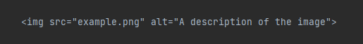
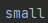

Images in HTML are added using the <img> tag.
The source file of the image is specified using the src attribute:
<img src="example.png">
Alternative text can be added using the alt attribute for accessibility:
<img src="example.png" alt="A description of the image">
This could look like the following:
The size of the image can be changed using the width and height attributes:
<img src="example2.png" alt="A description of the image" width="500" height="300">
This way you can adjust the size to a fix amount or stretch the image:
The srcset attribute is used to specify multiple sources for the same image:
<img src="example-small.png" srcset="example-medium.png 1000w, example-large.png 2000w" alt="A description of the image">

It allows the browser to choose the best image to display based on the screen size or pixel density of the device viewing the page.
This can help optimize loading times and reduce the amount of data used.